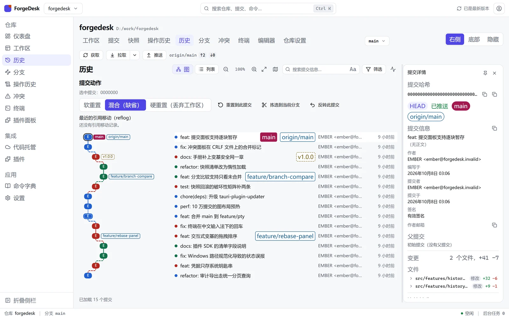
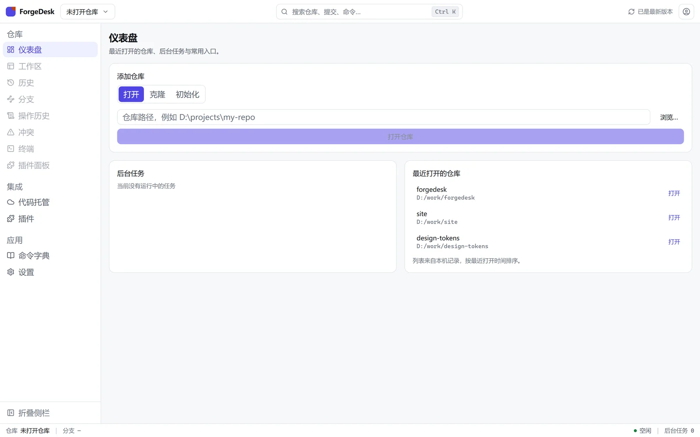
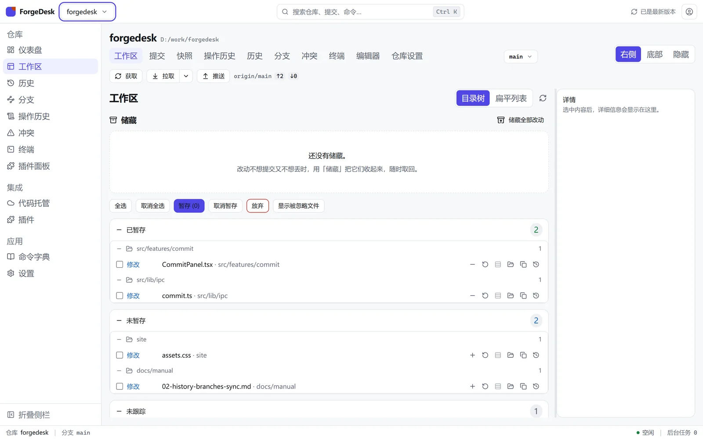
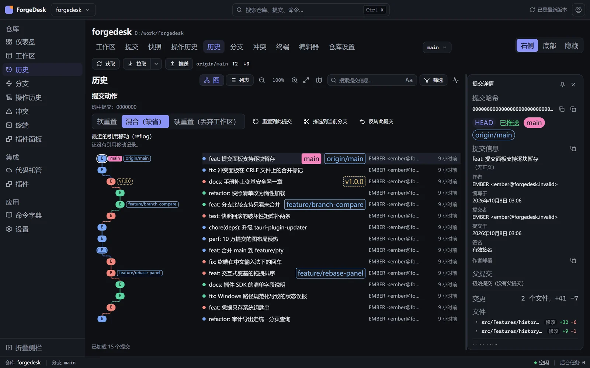

看得见的 Git
把易错的 Git 操作变成可视化界面、向导与可交互图表；破坏性操作先预览计划、自动打快照， 随时一键回滚。免费、开源、无 AI、无遥测。
状态：尚无可用版本- Apache-2.0 开源
- 凭据只存系统钥匙串
- 本地操作完全离线

它能做什么
- 看得见的历史 提交历史是可交互的泳道图：点选即看详情，分支与合并一目了然。
- 向导代替命令 合并、变基、解决冲突都走"预览计划 → 确认 → 执行"，每一步先看清楚再动手。
- 敢做的安全网 破坏性操作自动打快照，push 只允许 force-with-lease，随时一键回滚。
- 本地与私密 不含任何 AI 功能、没有遥测；凭据只存系统钥匙串，离线完全可用。
界面一览



快速开始
2 · 安装并打开首次提示有说明
本项目不购买付费代码签名证书（零成本原则），因此 SmartScreen / Gatekeeper 可能多问一次，逐步说明见 下载页的「安装与信任说明」。
3 · 打开或克隆仓库离线可用
还没有仓库？在终端里 30 秒建一个，然后在应用里打开它：
mkdir my-project && cd my-project
git init实测数据
-
301 ms
打开 10 万提交的仓库（仓库内
perf_probe实测） - ~8 MB Windows 安装包大小（v1.0.0 实测，不含浏览器内核）
- 0 遥测请求与 AI 功能；数据清单见隐私说明
- Apache-2.0 开源许可，永久免费，可自行构建
文档与手册
手册按任务组织：从打开第一个仓库，到处理一次真实的冲突。站点上的文档与仓库里的
docs/ 同源渲染。
- 手册目录 五篇的索引与阅读顺序，先看这一页
- ① 仓库操作 打开 / 克隆 / 初始化，日常提交与撤销
- ② 历史 · 分支 · 同步 看懂提交图，分支与远端同步的正确姿势
- ③ 冲突与 rebase 安全网 冲突逐块解决，变基前自动快照与回滚
- ④ GitHub 与工具 账号与凭据、内置终端、编辑器与诊断
- API 与插件 命令清单与插件 SDK（开发者向，GitHub）
常见问题
真的免费吗？我的代码或数据会被上传吗？
Apache-2.0 许可，永久免费，也没有"付费版"计划。应用不含任何遥测/AI 功能：数据只存在本机（数据库、快照、日志都在你的用户目录里）， 对外的网络请求只有你主动触发的那些（GitHub 操作、更新检查）。 完整清单见隐私说明。
支持哪些平台？
Windows 10 1809 或更高（依赖 WebView2，Windows 11 已内置）与 macOS 10.15+ （universal 构建，Apple Silicon 与 Intel 共用一个包）。Linux 暂缓： AppImage/deb/rpm 三套打包链与各自的真机验证还没做完，仓库里保留配置与 CI 骨架。
首次打开被系统拦截了，是不是有问题？
不是。本项目不购买付费代码签名证书（零成本分发的取舍），所以系统会多问一次。 你可以在下载页先核对 SHA256（必要时再验 GPG 签名）， 再按页面上的逐步说明放行——Windows 是「更多信息 → 仍要运行」， macOS 是右键「打开」或去除隔离标记。
会不会把我的仓库弄坏？
写操作走系统 git CLI（与你在终端里敲的是同一条路径），因此 hooks 与你的配置照常生效； 破坏性操作（reset --hard、变基、删分支、放弃改动……）动手前先打快照并展示计划， 随时可一键回滚。push 只允许 force-with-lease，不提供"直接强推"的入口。
用了它以后还需要命令行吗？
不冲突：它既是图形前端，也不夺走终端。内置了一个终端面板， 你随时可以在里面执行任意 Git 命令；两者操作的是同一个仓库。
怎么更新？更新安全吗？
应用内会自动检查更新（也可以在设置里关掉或选 stable/beta 渠道）。 更新包经过签名校验，校验失败直接拒绝安装，不存在"跳过校验"的降级路径； 清单与应用使用同一份数据。你也可以随时手动下载新版本覆盖安装。
更多问题见 常见问题（24 条） 与 故障排查（21 条）；没找到答案就在 Issues 里问。
为谁而做
如果 rebase --onto、cherry-pick
这些词让你紧张，ForgeDesk 把它们变成看得见的计划与可回滚的操作；
如果你本就是命令行熟手，它也能当成本地 GitHub 工作台与可视化速查工具。
- 刚接触 Git 的学生与转行者
- 想少敲命令的日常开发者
- 需要可视化讲解的教师与分享者
- 不允许数据离开本机的团队
技术说明
基于 Tauri 2 + Rust：Git 读操作走 libgit2、写操作走系统 git CLI， 界面用系统自带的 WebView 渲染——没有 Electron、不捆绑浏览器内核， 安装包保持在小体积量级。开源许可见 许可证页，数据与网络行为见 隐私说明。